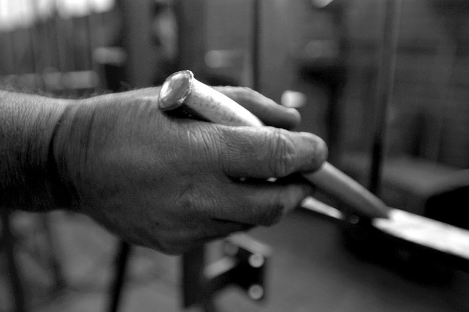

Storia
Tre generazioni, la stessa officina.

- 1954
Antonio Munari
Fonda l'officina di metalcostruzioni a Bellinzona.
- 1962
Alberto Munari
Entra nell'azienda di famiglia e la dirige dal 1975. L'officina si specializza in costruzioni metalliche, serramenti in acciaio e alluminio e attrezzature di protezione civile.
- 1988
Massimo Munari
Entra in officina, diventa responsabile dell'ufficio tecnico e dal 2006 dirige l'azienda.